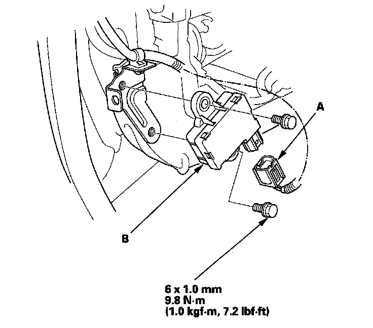
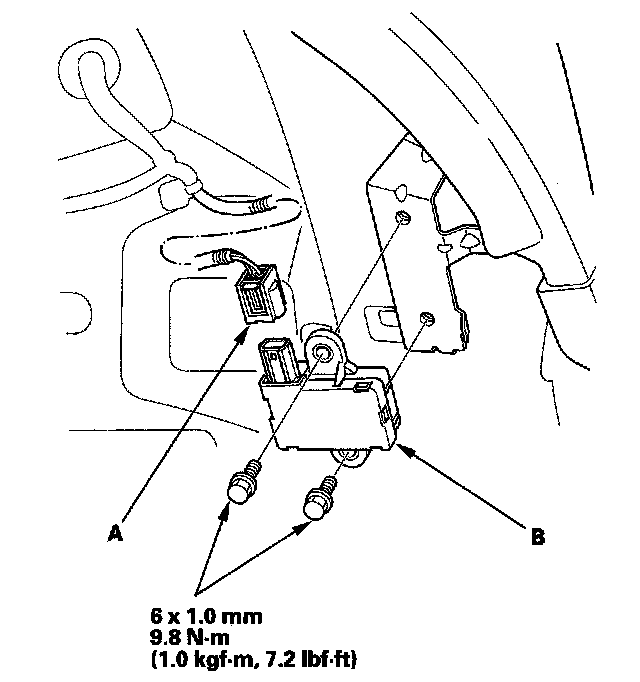

Initiator Replacement
Initiator ReplacementNOTE: Make sure the initiator mounting bracket is not bent or twisted as this may affect its communication with the TPMS control unit and the tire pressure sensor.
Front
1. Raise the front of the vehicle, and support it with safety stands in the proper locations.
2. Remove the front wheel.
3. Remove the front inner fender.
4. Disconnect the initiator connector (A).

5. Remove the initiator (B) from the inner side of the wheelwell.
6. Install the initiator in the reverse order of removal.
Rear
1. Raise the rear of the vehicle, and support it with safety stands in the proper locations.
2. Remove the rear wheel.
3. Remove the rear fender cover.
4. Disconnect the initiator connector (A).

5. Remove the initiator (B) from the inner side of the wheelwell.
6. Install the initiator in the reverse order of removal.